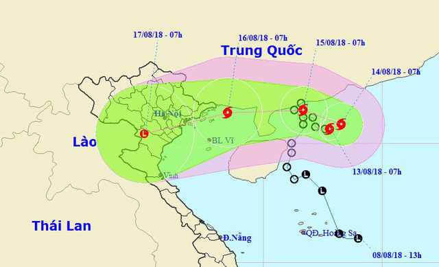

Cơn bão số 4 hình thành trên Biển Đông
Theo Trung tâm Dự báo khí tượng thủy văn Quốc gia, sáng nay (13/8), áp thấp nhiệt đới trên vùng biển phía Nam tỉnh Quảng Đông (Trung Quốc) đã mạnh lên thành bão, trở thành cơn bão số 4 năm 2018 (tên quốc tế: BEBINCA).
Hồi 7h, vị trí tâm bão ở vào khoảng 20,6 độ Vĩ Bắc; 112,8 độ Kinh Đông , trên vùng biển phía Nam tỉnh Quảng Đông (Trung Quốc). Sức gió mạnh nhất vùng gần tâm bão mạnh cấp 8 (60-75km/giờ), giật cấp 10. Phạm vi gió mạnh cấp 6, giật cấp 8 khoảng 90km tính từ tâm bão. Dự báo trong 24 giờ tới, bão di chuyển theo hướng Đông Đông Nam, mỗi giờ đi được khoảng 5km và còn có khả năng mạnh thêm.
Đến 7h ngày 14/8, vị trí tâm bão ở khoảng 20,8 độ Vĩ Bắc; 113,3 độ Kinh Đông , trên vùng biển phía Nam tỉnh Quảng Đông (Trung Quốc). Sức gió mạnh nhất vùng gần tâm bão mạnh cấp 8 (60-75km/giờ), giật cấp 10. Phạm vi gió mạnh cấp 6, giật cấp 8 khoảng 100km tính từ tâm bão.
Vùng nguy hiểm trên Biển Đông trong 24 giờ tới (vùng gió mạnh cấp 6 trở lên): Phía Bắc vĩ tuyến 19,0 độ Vĩ Bắc; phía Đông kinh tuyến 110,5 độ Kinh Đông.
Trong 24 đến 48 giờ tiếp theo, bão di chuyển theo hướng Tây Tây Bắc, mỗi giờ đi được khoảng 5km. Đến 7h ngày 15/8, vị trí tâm bão ở khoảng 21,4 độ Vĩ Bắc; 111,7 độ Kinh Đông, ngay trên trên vùng ven biển phía Nam tỉnh Quảng Đông (Trung Quốc). Sức gió mạnh nhất vùng gần tâm bão mạnh cấp 8-9 (60-90km/giờ), giật cấp 11. Phạm vi gió mạnh cấp 6, giật cấp 8 khoảng 120km tính từ tâm bão.
Trong 48 đến 72 giờ tiếp theo, bão di chuyển theo hướng Tây Tây Nam, mỗi giờ đi được khoảng 10km. Đến 7h ngày 16/8, vị trí tâm bão ở khoảng 21,3 độ Vĩ Bắc; 108,5 độ Kinh Đông, trên khu vực phía Bắc vịnh Bắc Bộ, cách bờ biển các tỉnh từ Quảng Ninh đến Nam Định khoảng 120-150km. Sức gió mạnh nhất vùng gần tâm bão mạnh cấp 8 (60-75km/giờ), giật cấp 10. Phạm vi gió mạnh cấp 6, giật cấp 8 khoảng 100km tính từ tâm bão. Cấp độ rủi ro thiên tai do bão: cấp 3.
Cảnh báo mưa lớn: Trong ngày 14-15/8 ở Bắc Bộ có mưa rải rác, từ đêm 15/8 đến ngày 17/8 ở các tỉnh Bắc Bộ và Bắc Trung Bộ sẽ có mưa to đến rất to (lượng mưa 250-350mm/đợt).
Ngoài ra, do ảnh hưởng của dải hội tụ nhiệt đới kết hợp với gió mùa Tây Nam hoạt động mạnh nên trong ngày và đêm nay (13/8), ở khu vực Giữa và Nam Biển Đông (bao gồm cả vùng biển quần đảo Trường Sa), vùng biển từ Bình Thuận đến Cà Mau tiếp tục có gió Tây Nam mạnh cấp 6, giật cấp 8, sóng biển cao từ 2-4m; biển động.
Vùng biển Vịnh Bắc Bộ, các vùng biển từ Bình Thuận đến Cà Mau, Cà Mau đến Kiên Giang và vịnh Thái Lan có mưa giông mạnh; trong cơn giông có khả năng xảy ra lốc xoáy và gió giật mạnh. Cấp độ rủi ro thiên tai do gió mạnh, sóng lớn: cấp 1.